Sugestões de café da manhã e da tarde
-
Smoothie Bowl:
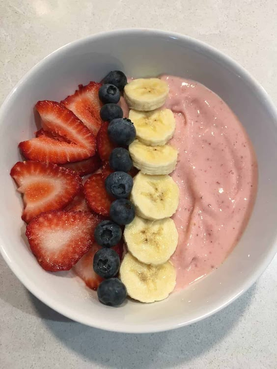
Misture no liquidificador frutas congeladas como banana, morango e um pouco de espinafre com leite sem lactose. Decore com granola sem glúten, sementes ou frutas de sua preferência.
-
Ovos mexidos com legumes:
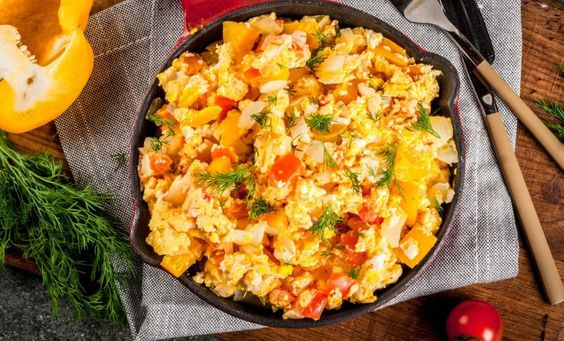
Frite os ovos junto com espinafre, cebola e tomate picado (ou legumes de sua preferência), pode ser servido com abacate ao lado ou acompanhado de pão sem glúten e sem lactose.
-
Panquecas de banana:
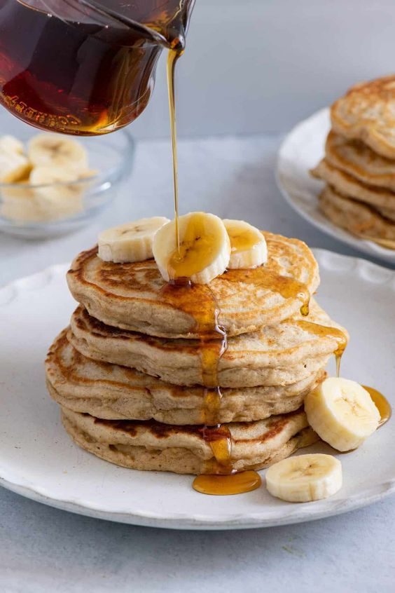
Misture banana amassada com ovos e cozinhe em uma frigideira antiaderente. Você pode adicionar canela para dar sab
Para quem restriçao de gluten e lactose
-
Smoothie Verde
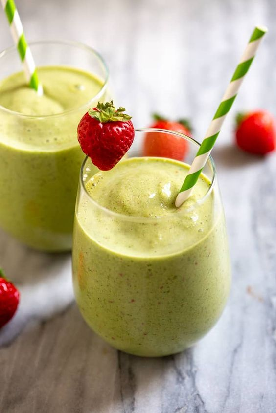
Ingredientes: 1 banana, 1 xícara de espinafre, 1/2 xícara de iogurte natural desnatado, 1 colher de sopa de sementes de chia, 1/2 xícara de água ou leite vegetal. Modo de Preparo: Bata tudo no liquidificador até ficar homogêneo.
-
Aveia Cozida com Frutas
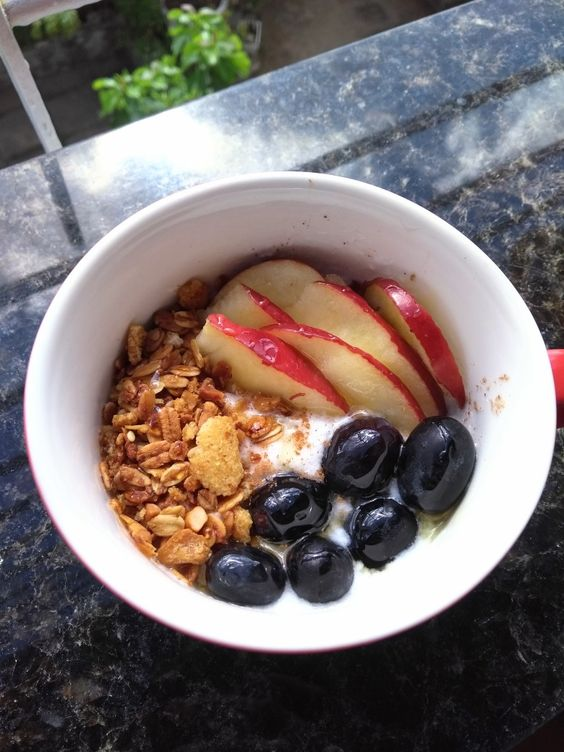
1/2 xícara de aveia, 1 xícara de água, 1/2 maçã picada, canela a gosto, e 1 colher de sopa de mel ou adoçante natural.
-
Omelete de Claras com Vegetais
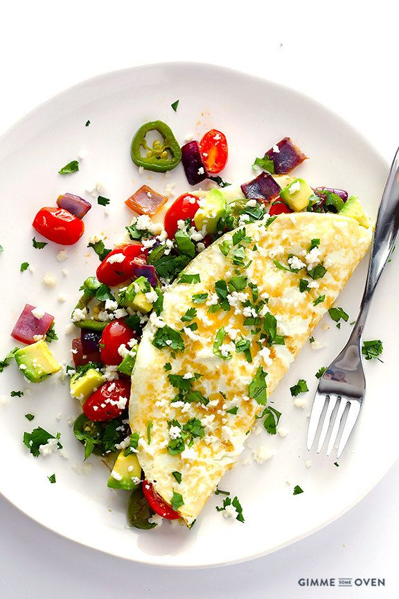
3 claras de ovo, 1/4 de xícara de espinafre picado, 1/4 de pimentão picado, temperos a gosto.
Para quem tem alto indice de gordura corporal
-
Sanduíche de peito de frango

Faça um sanduíche com 150g de peito de frango grelhado, queijo de sua preferência, folhas de alface ou espinafre e tomate em duas fatias de pão integral. Para acompanhar, pode adicionar uma xícara de café preto ou uma bebida protei
-
Tigela de iogurte grego com mix de frutas e nozes

Use 300g de iogurte grego, acrescente 1/2 xícara de frutas de sua preferência (como morangos, banana, mamão), 1/4 de xícara de granola, 1/4 de xícara de nozes ou amêndoas e um fio de mel para adoç
-
Pudim de chia

Misture 1/4 de xícara de sementes de chia com 1 xícara de leite (ou bebida vegetal) e deixe na geladeira durante a noite. De manhã, adicione frutas, granola e um punhado de amêndoas ou castanhas,você também pode adicionar mel para adoçar.
Sugestões de almoço e jantar
-
Frango curry com arroz de coco
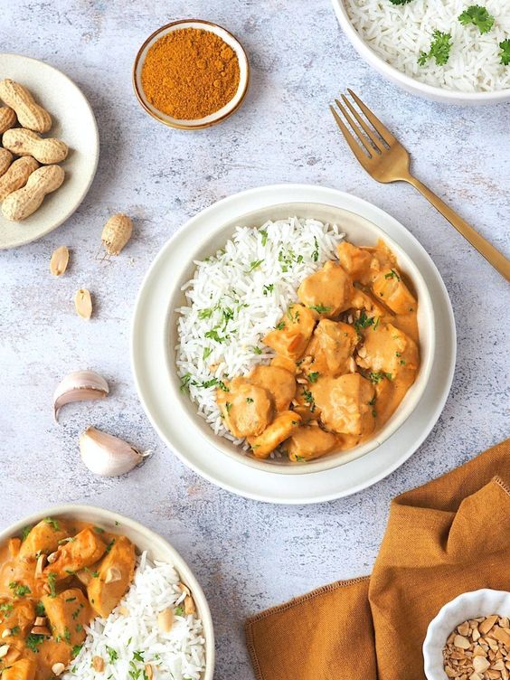
Ingredientes: Peito de frango em cubos, cebola, alho, curry em pó, leite de coco, arroz, legumes (como cenoura e ervilha). Modo de Preparo: Refogue a cebola e o alho, adicione o frango e o curry. Cozinhe até dourar, acrescente o leite de coco e deixe ferver. Sirva com arroz cozido.
-
Espaguete de Abobrinha com Molho de Tomate
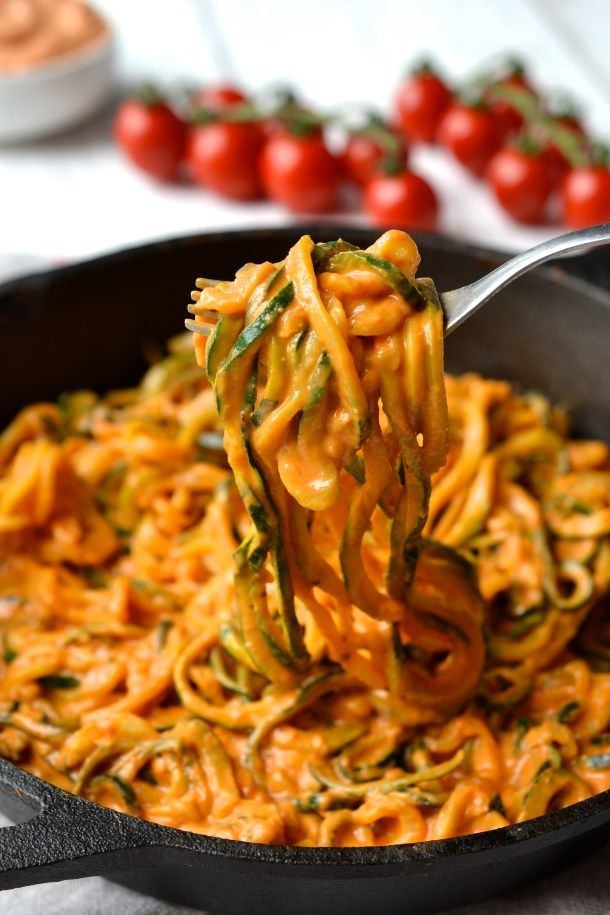
Ingredientes: Abobrinha cortada em tiras finas, molho de tomate, alho, manjericão. Modo de Preparo: Cozinhe a abobrinha rapidamente em uma frigideira. Adicione o molho de tomate e tempere com alho e manjericão. Pode ser servido com queijo sem lactose.
-
Tacos de Alface com Carne Moída
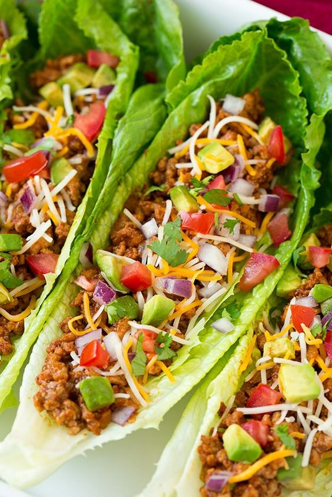
Ingredientes: Folhas de alface, carne moída temperada, tomate, cebola, abacate e salsa. Modo de Preparo: Prepare a carne moída com temperos. Monte os tacos usando as folhas de alface como "tortilhas" e adicione os acompanhamentos.
Para quem restriçao de gluten e lactose
-
Salada de Grãos com Frango Grelhado
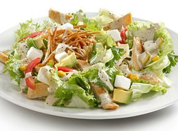
Misture quinoa com peito de frango grelhado, espinafre, tomate-cereja, batata em cubos preparada na air fryer, alface americana, cenoura (ou os vegetais de sua preferência), adicione um molho de yogurte natural com limão espremido e temperos a gosto.
-
Wrap Integral de Peru e Vegetais

Enrole peito de peru, alface, cenoura ralada e abacate em uma tortilha integral. Acompanhe com um molho à base de iogurte natural como na salada
-
Peixe Assado com Legumes
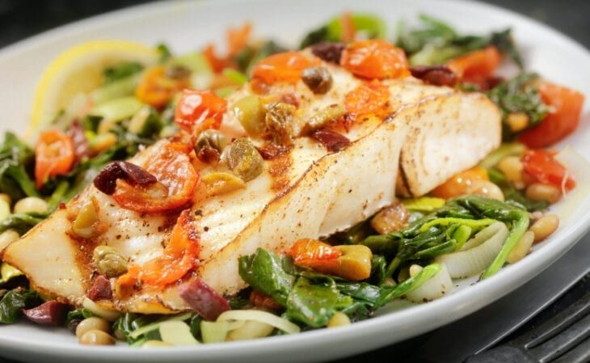
Asse filés de salmão ou tilápia com temperos como limão, alho e ervas. Sirva com uma variedade de legumes assados, como brócolis, cenoura e abobrinha. E algum carboidrato de sua preferencia
Para quem tem alto indice de gordura corporal
-
Panqueca de Frango:
Faça panquecas recheadas com 200g de peito de frango desfiado, queijo e molho de tomate. Acompanhe com uma salada de vegetais ou legumes.
-
Bife Acebolado com Arroz e Feijão:

Sirva 200g de bife acebolado com 1 xícara de arroz branco ou integral e 1/2 xícara de feijão cozidos. Acompanhe uma salada de folhas verdes com azeite e vinagre.
-
Lasanha de Berinjela:

Monte uma lasanha usando fatias de berinjela grelhadas, carne moída, molho de tomate e queijo. Asse até dourar e sirva com uma salada ou uma fonte de carboidrato.
Para quem deseja ganhar massa muscular
-